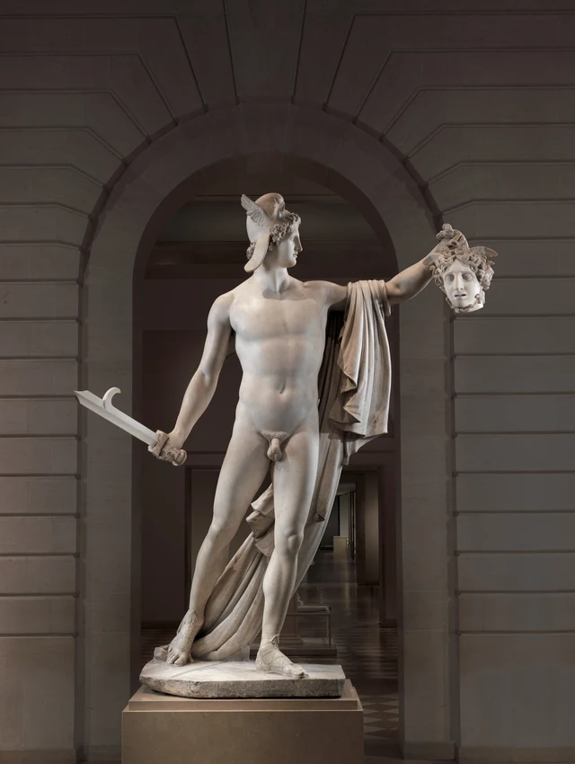

먼저 두 손의 높이를 보자.
한 손은 칼을 쥐고 허리 옆으로 내려와 있다. 다른 손은 높은 곳으로 뻗어 곱슬머리 한 덩이를 움켜쥐고 있다. 머리카락 아래에는 얼굴 하나가 매달려 있다. 페르세우스는 그쪽으로 고개를 돌리지만 몸은 우리를 향해 펼친다. 칼과 머리가 몸의 양쪽으로 나뉘고, 그 사이에는 고요하고 매끈한 가슴과 배가 넓게 놓인다.
그는 이미 베기를 멈췄고, 다른 일을 계속하고 있다. 그 결과를 들어 사람들에게 보여 주는 일이다.

카노바는 지극히 폭력적인 이야기를 차분히 바라볼 수 있는 형태로 구성했다. 살육이 작품에서 사라진 것은 아니다. 몸에서 떨어진 머리가 바로 눈앞에 있다. 하지만 다급한 싸움은 물러가고 뻗은 팔, 침착한 얼굴, 전시되는 대상의 위치가 남았다. 이 조각을 보며 특히 물어볼 만한 것은 바로 이 변화다. 우리는 온전하고 아름다운 몸에서 그가 손에 든 또 다른 얼굴로 어떻게 시선을 옮기는가.
이 작품은 19세기 초 신고전주의에 속한다. 카노바는 고대 그리스와 로마 조각을 연구하며 정제된 신체 비례, 분명한 윤곽, 절제된 표정으로 고대 주제를 새롭게 다루었다. 여기서 ‘고전’은 옛 작품을 그대로 베낀다는 뜻이 아니다. 새로운 구성이 고대 조각의 장중함과 설득력을 갖게 하는 일이 중요했다. V&A 카노바 연구 소개
이 글에서 보는 것은 타르노프스키 부부를 위해 제작하여 현재 뉴욕에 소장된 버전이다. 바티칸 버전보다 뒤에 만들어졌으며 모든 세부가 같지는 않다. 먼저 이 작품을 정확히 확인한 다음, 그것이 우리 앞에 승리를 어떻게 펼치는지 보자. Met 소장품 연구
1. 칼은 남아 있지만 칼을 휘두르는 동작은 지나갔다
오른손은 낮은 곳에서 칼자루를 쥐고, 칼날은 비스듬히 바깥으로 뻗는다. 끝에는 눈에 띄는 갈고리가 있어 평범한 직선 막대와 구분된다. 하지만 손은 어깨 위로 높이 들리지 않았고, 몸도 칼날을 따라 격하게 비틀리지 않는다. 칼은 무슨 일이 있었는지를 알려 줄 수 있지만, 눈앞의 몸을 다음 베기로 몰고 가지는 않는다.
반대편에서는 정반대다. 왼쪽 위팔은 거의 가로로 펼쳐지고 아래팔은 위로 들리며, 손은 머리 위에서 움켜쥔다. 칼날도 몸 밖으로 나가고 머리도 몸에서 떨어져 있다. 하나는 낮고 하나는 높아 몸통의 양쪽을 벌린다. 그 사이에는 지금 맞붙어 싸우는 상대가 없다. 관객에게 열어 보인 몸 하나만 있다.
널리 알려진 신화에서 페르세우스는 메두사의 머리를 가져오라는 명을 받고, 신들의 도움을 받아 방패에 비친 모습을 보며 사람을 돌로 만드는 시선을 피한 뒤, 메두사가 잠든 틈에 목을 벤다. 특별한 도구와 때를 이용해 완수한 기습이었다. 눈앞의 조각상은 이 과정을 재연하지 않는다. 잠들어 누운 몸도, 목으로 향하는 칼날도, 영웅이 반사된 모습을 볼 방패도 없다. Met 「고대 그리스 미술의 메두사」
따라서 ‘승리’라는 전통적 해석에는 근거가 있다. 손에 이미 전리품이 있고, 무기는 공격 위치를 벗어났으며, 인물도 몸을 피하는 중이 아니다. 미술관 큐레이터 피터 벨은 이 동작이 살육이 아니라 제시에 속한다고 강조한다. 영웅이 아테나에게 머리를 바치는 순간을 떠올리게 할 가능성도 제시한다. Met 공식 해설
누구에게 바치는지는 사진 자체가 설명하지 않는다. 우선 확인할 수 있는 것은 왼손이 머리를 몸 옆에서 다른 사람이 볼 수 있는 위치로 내보낸다는 점이다. 이 동작은 남의 눈을 피해 완수한 위험한 임무를 공개적으로 보이는 결과로 바꾼다. 조각상 앞에 선 우리도 이 제시를 받아 보는 쪽에 놓인다.
2. 몸은 우리에게 열려 있고 얼굴은 다른 곳을 향한다
이 조각은 높이가 2m 40cm를 넘는다. 그림 1에서 인물은 건축물의 아치를 거의 가득 채우고, 어깨와 팔이 상체의 폭을 펼친다. 실제 크기를 알고 나면 들어 올린 머리는 화면 속의 작은 부속물에 그치지 않는다. 커다란 인물의 손에 매달려 땅에서 상당히 높은 곳에 있다.
두 다리도 화면의 방향을 균등하게 나누지 않는다. 영웅의 왼쪽 다리는 더 곧고 그림 1의 오른쪽에 있다. 오른쪽 다리는 반대편으로 비스듬히 나가며 발뒤꿈치를 든다. 상체는 비스듬한 다리를 따라 기울어지지 않고, 허리와 배가 두 다리 사이에서 방향을 바꾸며, 어깨는 다시 더 넓게 펼쳐진다. 발에서 위로 보면 몸은 몇 차례 가볍게 방향을 바꾼 뒤 마지막에 뻗은 왼팔로 시선을 보낸다.
그 때문에 머리를 든 손은 무거운 것도 가볍게 다루는 듯하다. 몸 전체는 크지만 동작에 이를 악물거나 어깨를 움츠리는 힘겨움이 드러나지 않는다. 칼자루를 쥐고 머리카락도 쥐었지만, 가슴과 배에는 넓고 이어지는 면이 남아 있다. 힘은 자세의 배치에 놓이며, 얼굴에 순간적으로 터져 나오는 표정에 집중되지 않는다.

얼굴을 가까이 보면 입술은 다물어져 있고, 미간에는 깊이 찌푸린 주름이 없다. 투구 양옆의 얇은 부분이 내려오며 곱슬머리는 이마 가장자리에서 작은 굴곡을 촘촘히 만든다. 그래서 뺨과 목의 매끈함이 더 두드러진다. 자신감을 읽을 수도, 거리감을 느낄 수도 있다. 무엇이라 부르든 이 조각은 격한 표정으로 우리를 재촉하지 않는다.
특히 중요한 것은 머리가 돌아간 방향이다. 가슴은 관객을 향하지만 얼굴은 머리를 든 쪽으로 돌아간다. 몸 전체를 볼 수 있어도 이 열림을 그가 우리와 직접 소통하는 것으로 받아들이기는 어렵다. 그의 주의가 향하는 방향은 우리를 그의 얼굴에서 벗어나게 하고, 어깨와 팔과 손을 따라 다른 얼굴을 찾도록 이끈다.
고대의 《벨베데레의 아폴론》은 이 구성의 중요한 참조 작품이다. Met 소장품 연구 그 옛 작품을 몰라도 여기서 장중함이 어떻게 생기는지 볼 수 있다. 몸통은 넓게 열리고, 팔다리는 서로에게 공간을 남기며, 머리의 회전은 그 열린 폭에 방향을 정해 준다. 이상적인 몸은 아름다운 비례의 묶음에 그치지 않는다. 여기서는 시선을 이끄는 일을 한다.
3. 메두사에게도 고요하고 바라볼 만한 얼굴이 있다
왼팔을 따라가면 처음에는 뱀이 가장 눈에 띌 수 있다. 뱀들은 곱슬머리 사이에서 나와 관자놀이와 턱을 감고, 작은 비늘은 더 넓은 머리카락 다발과 구분된다. 하지만 뱀이 에워싼 가운데에는 이빨을 드러내고 사납게 으르렁대는 짐승의 얼굴이 없다.

콧날은 길고 가늘며 뺨은 고르고, 입은 좁은 틈만 벌어져 있다. 눈꺼풀의 가장자리가 분명하고 얼굴 표면은 빽빽한 상처나 피로 뒤덮이지 않았다. 메두사와 페르세우스의 닮은 점은 우선 똑같이 공들여 조각한 얼굴 구조다. 복잡한 곱슬머리가 매끈한 피부를 감싸며, 두 얼굴 모두 멈춰 서서 자세히 볼 수 있다.
차이는 이 얼굴이 어떻게 공중에 머무는지에 있다. 페르세우스의 머리는 목을 거쳐 어깨에 이어지고, 메두사의 머리는 위에서 손에 들려 있다. 하나는 몸이 받치고, 하나는 머리카락으로 매달린다. 칼을 잠시 보지 않더라도 지지 방식이 두 존재의 위치 관계를 분명히 말해 준다.
목 아래 타원형 구멍은 이 차이를 더 구체적으로 만든다. 살과 피가 뒤집혀 나온 상처로 처리되지는 않았다. 하지만 아래에서 보면 안쪽의 어둠이 분명히 드러난다. 얼굴은 피부처럼 섬세해도 머리는 여전히 몸에서 분리된 물건으로 들려 있다. 여기의 고요함은 단절을 없애지 못한다. 다만 우리의 주의를 솟구치는 피에서 들어 올리기, 매달기, 보여 주기로 옮긴다.
‘괴물이니 당연히 추해야 한다’는 말로 이야기를 채울 필요도 없다. 고대 그리스 미술의 메두사에는 원래 여러 모습이 있었고, 고전기에는 이미 아름다운 형상도 등장했다. 그 머리는 오랫동안 몸을 보호하고 액을 막는 이미지로도 쓰였다. Met 메두사 연구 이를 알면 오히려 카노바의 선택이 더 분명해진다. 위험한 존재라는 점은 뱀 머리카락과 잘린 머리가 여전히 알려 주지만, 얼굴은 감상할 만한 형태를 간직한다.
신화의 규칙도 다시 생각해 보자. 메두사가 죽은 뒤에도 그 머리는 여전히 사람을 돌로 만들 수 있다. 지금 페르세우스가 그쪽으로 고개를 돌렸다고 해서 목을 베자 위험이 완전히 사라졌다고 말할 수는 없다. 신화와 이미지의 역사 조각에서 그의 얼굴을 머리 쪽으로 향하게 한 것은 강력한 구성상의 관계다. 신비한 힘이 어떻게 효력을 잃었는지 설명하는 줄거리까지 함께 제공한 것은 아니다.
그러므로 이 얼굴을 보는 우리의 위치는 독특하다. 이야기는 보지 말라고 하지만, 작품은 매우 큰 공을 들여 바라볼 만하게 만들었다. 메두사는 전리품으로 들려 있으면서도 자신의 형태로 우리의 주의를 붙잡는다. 몸을 되찾지는 못했지만 승리를 증명하는 데만 쓰이는 작은 표식으로 줄어들지도 않았다.
4. 천이 두 얼굴을 땅으로 이어 준다
그림 4로 옮겨 머리 대신 왼팔 위의 천을 먼저 보자.

천은 위팔 가까이에서 좁고 촘촘한 주름으로 겹치고, 아래로 갈수록 넓어진다. 바깥 가장자리는 허리 옆에서 곡선을 그리지만, 안쪽의 깊은 접힘은 시선을 계속 다리 뒤로 이끈다. 아래에서는 긴 주름이 반대편 발치로 비스듬히 향하다가 받침에서 마무리된다.
나체만 보면 가슴과 배, 다리는 상당히 분명한 인체를 이룬다. 천이 더해지면서 몸 옆에 독립적인 길이 하나 생긴다. 위에서는 높이 든 손에 가까워지고, 중간에서는 배와 거리를 유지하며, 아래에서는 다시 발에 가까워진다. 우리는 머리에서 팔을 따라 옷주름으로 들어가 그대로 땅까지 내려갈 수 있다. 드러난 몸통을 따라 내려갈 필요가 없다.
이 길은 작품 전체의 조밀함과 성김도 조절한다. 왼팔 아래는 온통 빈 곳이 아니라 천으로 두툼하게 채워져 있다. 아래팔과 머리 주위에는 열린 공간이 남아 있어 매달린 얼굴이 가슴과 한 덩어리로 뒤섞이지 않는다. 오른쪽의 칼은 홀로 밖으로 뻗는다. 가늘고 길며 단단하고 곧아서 왼쪽의 촘촘한 주름과 차이를 이룬다.
그림 1과 그림 4는 서로 다른 겹침을 보여 준다. 그림 1에서는 왼팔이 가로로 충분히 펼쳐지고 메두사의 얼굴이 정면에 가깝다. 그림 4에서는 아래팔이 우리 쪽을 더 분명히 향하며 머리도 옆으로 돌아가 있다. 그 들린 물체는 그렇게 두께를 얻는다. 영웅의 몸 앞쪽 공간을 차지하는 것이며, 그의 옆에 붙여 놓은 무늬가 아니다.
사진 속 그림자도 대리석 옷주름이 표면에 그린 선이 아니라는 점을 일깨운다. 깊은 주름 안은 어둡고 바깥 가장자리는 빛을 받으며, 천의 기복은 실제로 앞뒤를 향해 뻗어 있다. 나체의 이어지는 곡면, 옷주름의 골, 뱀 머리카락의 작은 꺾임은 같은 돌로 서로 다른 세 가지 감상의 리듬을 만든다. 고요함은 빈약한 표면과 같지 않다. 오히려 이 차이들을 차례로 볼 수 있게 한다.
5. 승리에는 바라보는 사람이 필요하다
이제 처음의 두 손으로 돌아가 보자.
칼은 낮고 머리는 높다. 처음에는 둘이 신화를 알아보는 데만 도움이 되었을 수도 있다. 두 얼굴과 옷주름을 본 뒤에는 머리를 드는 동작이 이야기 끝의 자세에 그치지 않는다. 무엇이 가장 잘 보일지, 누가 온전한 사람으로 나타나고 누가 들어 올릴 수 있는 물건으로 나타날지를 결정한다.
이 때문에 작품의 장중함에는 언제나 불편함이 남는다. 영웅은 온전하고 여유로운 몸을 얻었고, 메두사에게는 손에 붙잡힌 머리만 남았다. 둘 다 섬세하게 조각되었다고 해서 대등한 위치에 놓이지는 않는다. 부드러운 얼굴과 가지런한 절단면은 폭력을 덜 자극적으로 만들지만, 그 결과를 여전히 눈에 잘 띄는 자리에 남겨 둔다.
따라서 영웅의 승리라는 전통적 해석은 유용한 출발점이다. 칼과 투구, 잘린 머리와 보여 주는 자세가 어떻게 같은 이야기에 속하는지 이해하게 한다. 계속 보다 보면 작품은 또 한 가지를 알아차리게 한다. 승리를 이처럼 고요하게 감상할 수 있는 것은 싸움이 화면 밖으로 옮겨지고, 전리품이 충분히 명료하고 아름다운 자리에 배치되었기 때문이다.
카노바는 관객이 그 한 번의 칼질을 목격하게 하지 않았다. 머리를 들어 올린 뒤의 순간을 마주하게 했다. 우리는 돌을 피부와 곱슬머리와 옷주름으로 바꾸는 솜씨에 감탄할 수 있고, 동시에 머리카락을 움켜쥔 손도 보아야 한다. 아름다움이 보는 시간을 늘린다. 길어진 시간 덕분에 우리는 이 고요함이 무엇으로 이루어졌는지 알아볼 수 있다.
더 읽고 싶다면: SAE로 다시 보기
메두사의 얼굴이 아름답게 조각되었다고 느끼면 목을 벤 행위에도 찬성하는 것일까.
먼저 질문을 조금 작게 잡아 보자. 그림 3으로 돌아가 발걸음을 멈추게 하는 것을 두 종류로 나누어 짚는다. 하나는 곱슬머리와 뱀 비늘의 차이, 입술의 얇은 가장자리, 뺨에서 턱으로 넘어가는 굴곡일 수 있다. 다른 하나는 정수리 위에서 움켜쥔 손, 몸이 없는 목일 수 있다. 앞의 것은 조각이 어떻게 성립하는지에 주의를 기울이게 하고, 뒤의 것은 이미지가 어떤 일을 당한 모습을 표현하는지 의식하게 한다. 같은 사진 안에서 이 두 방향의 주의가 서로를 지울 필요는 없다.
다시 그림 1로 돌아가 판단이 바뀌는지 보자. 머리 세부 사진의 정교한 아름다움은 작품 전체로 돌아오면 한 사람이 다른 사람을 보여 주는 자세에 속한다. 그 형태 관계를 감상하면서도 불편함을 느낄 수 있다. 또는 불편함을 이렇게 선명한 형식 속에 남겼기 때문에 계속 볼 만한 작품이라고 생각할 수도 있다.
이는 단순히 ‘예쁘다’를 ‘추하다’로 바꾸어 판정하는 것과 다르다. 한 번의 감상에서 형식 판단, 즐거움, 행위에 대한 판단이 각각 무엇에 답하는지가 문제다. 모두를 ‘좋다’ 한마디로 표현하면 실제로 본 차이를 놓치기 쉽다.
SAE(Self-as-an-End) 미학 총론은 아름다움과 즐거움을 분명히 구분하고, 아름다움과 옳음, 유용함 같은 다른 판단도 구분한다. 여기서는 이 점으로 들어갈 수 있다. 어떤 조각적 관계가 성립함을 인정한다고 해서, 그것이 표현한 모든 일을 찬성할 만한 행동으로 여길 필요는 없다. 이 구별은 계속 보는 일을 돕는다. 이론 용어 하나로 영웅이나 관객에게 최종 판결을 내리려는 것이 아니다. SAE 미학 총론
이미지와 자료 안내
사진 네 장은 메트로폴리탄 미술관의 같은 소장품 기록에서 가져왔다. 비스듬한 정면 전신 두 장, 페르세우스의 머리와 가슴 세부, 메두사의 머리 세부다. 모두 긴 변이 4000픽셀이며 공식 다운로드 파일을 그대로 보존했다. 색 보정, 재압축, 덧그리기, 이미지 생성은 하지 않았다. 사진 속 조명과 배경 건축물, 구도는 형태가 드러나는 방식에 영향을 주므로, 이 사진들을 사방에서 완전히 둘러본 관찰과 같게 취급하지 않는다.
글 전체에서 자세히 읽은 것은 소장품 번호 67.110.1뿐이다. 바티칸 버전이나 다른 조각가의 같은 주제 작품으로 세부를 대체하지 않았다. 작품 정보, 신화, 역사적 해석에는 각각 출처를 밝혔으며 구체적인 감상 순서와 해석은 이 글에서 구성했다. 각 이미지의 전체 출처, 크기, 이용 조건, 파일 검증 정보는 이미지 목록, 연구 출처는 참고 자료에 정리했다.